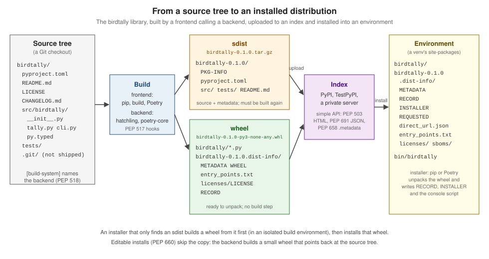

Packaging Concepts & Standards
|
This content was generated with the assistance of AI and should be verified against the official documentation before being relied on in production. |
This page explains the standard pieces that both pip and Poetry are built from. It was written against pip 26.2.2, Poetry
2.5.1 with poetry-core 2.5.0, build 1.6.1 and hatchling 1.32.4, and every command below was run on CPython 3.14.6 on
2026-10-22. Paths under the scratch directory used for the runs are shortened to … in the output.
Python has no single build tool. Packaging is a chain of small, standardised jobs: a build frontend asks a build backend to
turn a source tree into distribution files, an index serves those files, and an installer unpacks one of them into an
environment. pip is a frontend and an installer; Poetry is a frontend, an installer, a resolver and a project manager, and
poetry-core is its backend. The roles are introduced on the
section landing page; this page goes through the artefacts and the
specifications that connect them. How an installed package is then found by import is covered in
Modules and Packages.

Distribution packages and import packages
The word package means two different things in Python, and most naming confusion comes from mixing them up.
-
A distribution package is something you install: the name you type after
pip installor put independencies. On PyPI it is usually the same as the project. It may also mean one file of one version of the project (an sdist or a wheel). -
An import package is a Python module that can contain submodules: the name you type after
import. It is normally a directory with.pyfiles.
The two names are linked only by convention. pip install birdtally gives you import birdtally, but pip install Pillow
gives you import PIL, and attrs ships both attrs and attr. Indexes do not enforce any link between them, which is why
the Packaging User Guide warns that seeing import foo is no proof that the PyPI project foo is the right one: installing it
blindly can pull in an unrelated or malicious package. PEP 794 (Accepted) adds the optional Import-Name and
Import-Namespace core-metadata fields so that a distribution can declare which import names it provides; see
the import-names key.
Source: PyPA: What’s a distribution package?, PyPA: What’s an import package?, PyPA: How do the names compare?.
Name normalization
Import names are case-sensitive Python identifiers and use underscores. Distribution names are compared after
normalization: the name is lower-cased and every run of -, _ and . becomes a single -. So Birdtally, birdtally
and BIRDTALLY are one project, and bird_tally, Bird.Tally and BIRD--tally are another (bird-tally). The regular
expression from the specification is re.sub(r"[-_.]+", "-", name).lower(); the packaging library implements it as
canonicalize_name:
python -c "
from packaging.utils import canonicalize_name
for n in ['Birdtally','birdtally','bird_tally','Bird.Tally','BIRD--tally']: print(f'{n!r:16} -> {canonicalize_name(n)!r}')"'Birdtally' -> 'birdtally'
'birdtally' -> 'birdtally'
'bird_tally' -> 'bird-tally'
'Bird.Tally' -> 'bird-tally'
'BIRD--tally' -> 'bird-tally'Source: PyPA: Name normalization.
Normalization is applied everywhere a name is compared: PyPI refuses a new project whose normalized name collides with an
existing one, pip and Poetry treat Bird_Tally in a requirement as bird-tally, and the simple API URL is always the
normalized form (/simple/bird-tally/). In file names the rule is different: sdist and wheel file names, and
.dist-info directory names, replace - with _ so that the name contains exactly one dash between name and version
(bird_tally-0.1.0-py3-none-any.whl). Extra names are normalized the same way since PEP 685, so birdtally[Pretty] and
birdtally[pretty] select the same extra; see
Versions & Dependency Specifiers.
Source distributions, wheels and eggs
| Format | What it is | What an installer does with it |
|---|---|---|
sdist ( |
A gzipped tar archive of the source tree plus a |
It cannot be installed directly. The installer creates a build environment, runs the backend named in |
wheel ( |
A zip archive in the binary distribution format (PEP 427): the files already in their final layout, plus a
|
It is unpacked into the environment, with no code from the project run at install time. Choosing a wheel is therefore faster and safer than building from an sdist. |
egg ( |
The setuptools format from 2004, never standardised. It had no file name tags and supported importing from a zip. |
Obsolete. pip never installed eggs; PyPI stopped accepting egg uploads on 2023-08-01. Do not produce them. |
Wheels are not only for compiled code. A pure-Python project like birdtally still ships a py3-none-any wheel, because
installing a wheel never runs the build backend and so never depends on the backend being installable. Publish both an sdist
and at least one wheel: the
Building sdists & Wheels page
explains the tags in the file name, and
Binary Wheels & Extension Modules
covers the platform-specific ones.
Building both with python -m build
build is the reference PEP 517 frontend. With no options it builds the sdist first and then the wheel from the sdist, which
proves that the sdist contains everything the wheel needs:
cd birdtally # the pip flavour, hatchling backend
python -m build* Creating isolated environment: venv+pip...
* Installing packages in isolated environment:
- hatchling>=1.27
* Getting build dependencies for sdist...
* Installed build dependency versions:
- hatchling==1.32.4
* Building sdist...
* Building wheel from sdist
* Creating isolated environment: venv+pip...
* Installing packages in isolated environment:
- hatchling>=1.27
* Getting build dependencies for wheel...
* Installed build dependency versions:
- hatchling==1.32.4
* Building wheel...
Successfully built birdtally-0.1.0.tar.gz and birdtally-0.1.0-py3-none-any.whlThe two archives contain different things. The sdist keeps the source layout and adds PKG-INFO:
python -m tarfile -l dist/birdtally-0.1.0.tar.gzbirdtally-0.1.0/CHANGELOG.md
birdtally-0.1.0/examples/survey.csv
birdtally-0.1.0/src/birdtally/__init__.py
birdtally-0.1.0/src/birdtally/cli.py
birdtally-0.1.0/src/birdtally/py.typed
birdtally-0.1.0/src/birdtally/tally.py
birdtally-0.1.0/tests/test_tally.py
birdtally-0.1.0/LICENSE
birdtally-0.1.0/README.md
birdtally-0.1.0/pyproject.toml
birdtally-0.1.0/PKG-INFOThe wheel has only the import package and its .dist-info directory:
python -m zipfile -l dist/birdtally-0.1.0-py3-none-any.whlFile Name Modified Size
birdtally/__init__.py 2020-02-02 00:00:00 223
birdtally/cli.py 2020-02-02 00:00:00 1089
birdtally/py.typed 2020-02-02 00:00:00 0
birdtally/tally.py 2020-02-02 00:00:00 979
birdtally-0.1.0.dist-info/METADATA 2020-02-02 00:00:00 714
birdtally-0.1.0.dist-info/WHEEL 2020-02-02 00:00:00 87
birdtally-0.1.0.dist-info/entry_points.txt 2020-02-02 00:00:00 49
birdtally-0.1.0.dist-info/licenses/LICENSE 2020-02-02 00:00:00 819
birdtally-0.1.0.dist-info/RECORD 2020-02-02 00:00:00 702The fixed 2020-02-02 time stamp is hatchling’s reproducible-build default (it honours SOURCE_DATE_EPOCH when set), so two
builds of the same tree produce byte-identical wheels. The WHEEL file records the format version, the backend and the tags:
unzip -p dist/birdtally-0.1.0-py3-none-any.whl birdtally-0.1.0.dist-info/WHEELWheel-Version: 1.0
Generator: hatchling 1.32.4
Root-Is-Purelib: true
Tag: py3-none-anyBuild frontends, build backends and build isolation
Before 2017 every build ran python setup.py …, which meant that setuptools had to be installed first and that nothing else
could build a project. Two PEPs split that monolith:
-
PEP 518 added
pyproject.tomland its[build-system]table.requireslists what must be installed to run the build, so a frontend can install it before the build starts. -
PEP 517 defined the interface between the tool that starts a build (the frontend: pip, build, Poetry, uv) and the library that does it (the backend: setuptools, hatchling, poetry-core, flit-core, …). The backend is a Python object named by
build-backend, with mandatory hooksbuild_wheelandbuild_sdistand optional ones such asget_requires_for_build_wheelandprepare_metadata_for_build_wheel.
[build-system]
requires = ["hatchling>=1.27"]
build-backend = "hatchling.build"The frontend decides where the backend runs. By default it creates a fresh, isolated environment for every build, installs
requires into it (and whatever get_requires_for_build_* returns), and calls the hooks in a subprocess. Isolation means a
build cannot accidentally depend on whatever happens to be installed in your environment, and that two projects can need
different versions of the same backend. The cost is a download per build, which is why pip caches wheels and why unpinned
build requirements can make an old release fail to build years later. pip 25.3 made PEP 517 the only build path (the
--no-use-pep517 option was removed); the details, including --no-build-isolation and --config-settings, are on
pip: Build System Interface. Poetry builds its own
projects in process with poetry-core and isolates the builds of dependencies it installs from sdists, which is configurable with
installer.build-config-settings; see
Poetry: Configuration.
Editable installs
During development you want import birdtally to load the files you are editing, not a copy. An editable install does that.
Until PEP 660 the only way was setuptools' setup.py develop; PEP 660 (2021) standardised it as two more backend hooks,
build_editable and get_requires_for_build_editable. The backend builds a small wheel whose content points back at the source
tree, usually a .pth file, and the installer installs that wheel like any other. pip supports PEP 660 since 21.3 and removed
the setup.py develop fallback in 25.3, so every backend in use today has to implement the hooks (setuptools does since 64).
Poetry installs the root project in editable mode by default when you run poetry install.
python -m pip install -e .Obtaining file://…/birdtally
Installing build dependencies: started
Installing build dependencies: finished with status 'done'
Checking if build backend supports build_editable: started
Checking if build backend supports build_editable: finished with status 'done'
Getting requirements to build editable: started
Getting requirements to build editable: finished with status 'done'
Installing backend dependencies: started
Installing backend dependencies: finished with status 'done'
Preparing editable metadata (pyproject.toml): started
Preparing editable metadata (pyproject.toml): finished with status 'done'
Building wheels for collected packages: birdtally
Building editable for birdtally (pyproject.toml): started
Building editable for birdtally (pyproject.toml): finished with status 'done'
Created wheel for birdtally: filename=birdtally-0.1.0-py3-none-any.whl size=2342 sha256=10ddfa7ec26eb643ad4b1ee1057939cd9a031aedefc06898128ac3ee0c023011
Stored in directory: /tmp/pip-ephem-wheel-cache-lmmpnzfa/wheels/f6/db/62/bd98a71f246925c56d66642eb828e549b9be695d806c52a168
Successfully built birdtally
Installing collected packages: birdtally
Successfully installed birdtally-0.1.0hatchling implemented the editable wheel with a single path file, _editable_impl_birdtally.pth, whose only line is the src
directory, so the interpreter adds …/birdtally/src to sys.path at start-up:
python -c "import birdtally; print(birdtally.__file__)"…/birdtally/src/birdtally/__init__.pySource: PEP 660, pip: Editable installs.
What an installer leaves behind: .dist-info
Installing a wheel copies its files into the environment’s site-packages and turns its .dist-info directory into a record
of the installation. That record is what pip list, pip show, pip uninstall, importlib.metadata and Poetry’s installer
all read. After installing the birdtally wheel:
python -m pip install dist/birdtally-0.1.0-py3-none-any.whl
ls .venv/lib/python3.14/site-packages/birdtally-0.1.0.dist-info .venv/lib/python3.14/site-packages/birdtally-0.1.0.dist-info/licenses
cat .venv/lib/python3.14/site-packages/birdtally-0.1.0.dist-info/INSTALLERProcessing ./dist/birdtally-0.1.0-py3-none-any.whl
Installing collected packages: birdtally
Successfully installed birdtally-0.1.0
.venv/lib/python3.14/site-packages/birdtally-0.1.0.dist-info:
INSTALLER
METADATA
RECORD
REQUESTED
WHEEL
direct_url.json
entry_points.txt
licenses
.venv/lib/python3.14/site-packages/birdtally-0.1.0.dist-info/licenses:
LICENSE
pip| File or directory | Meaning |
|---|---|
|
The core metadata (name, version, |
|
A CSV file with one line per installed file: path, |
|
The name of the tool that installed the project ( |
|
pip’s marker that the project was asked for directly rather than pulled in as a dependency. It is a tool-specific extension now;
|
|
PEP 610: written when the project came from a URL or a local path instead of an index, so tools can reproduce the install. A
local directory gives |
|
The |
|
The licence files named by |
|
Software bills of materials in a standard format (PEP 770), for projects that vendor or statically link other software.
birdtally has none. pip itself ships a CycloneDX SBOM of its vendored libraries since 26.2, at |
The local install from a directory records where it came from:
python -m pip install --force-reinstall .
cat .venv/lib/python3.14/site-packages/birdtally-0.1.0.dist-info/direct_url.json{"dir_info": {}, "url": "file:///…/birdtally"}The simple repository API
An installer finds files through an index’s simple API: one page per project at /simple/<normalized-name>/ that lists every
file with its URL and hash. Three PEPs shape it:
-
PEP 503 defined the HTML form: one
<a>per file, a#sha256=fragment on the URL,data-requires-pythonand, since PEP 592,data-yanked. PEP 833 (Final, 2026) freezes the HTML form: new features are added only to the JSON form, and HTML stays as it is for existing clients. -
PEP 691 added a JSON form of the same data, chosen by content negotiation with
Accept: application/vnd.pypi.simple.v1+json. pip asks for JSON first since 22.2. -
PEP 658 (with the rename in PEP 714) lets the index serve a wheel’s
METADATAas a separate<file>.metadatafile, flagged bycore-metadatain JSON anddata-core-metadatain HTML. The resolver can read dependencies without downloading whole wheels, which is whypip install --dry-runis fast. pip uses it since 22.3.
The JSON entry for one wheel of a small project on PyPI shows all of them at once (the hash values are shortened here):
curl -s -H 'Accept: application/vnd.pypi.simple.v1+json' https://pypi.org/simple/tomli-w/ \
| python -c "import json,sys; d=json.load(sys.stdin); print(json.dumps([f for f in d['files'] if f['filename'].endswith('.whl')][-1], indent=2))"{
"core-metadata": {
"sha256": "66e81ac2…a9c8de"
},
"data-dist-info-metadata": {
"sha256": "66e81ac2…a9c8de"
},
"filename": "tomli_w-1.2.0-py3-none-any.whl",
"hashes": {
"sha256": "18830609…83cf90"
},
"provenance": null,
"requires-python": ">=3.9",
"size": 6675,
"upload-time": "2025-01-15T12:07:22.074224Z",
"url": "https://files.pythonhosted.org/packages/c7/18/c86eb8e0202e32dd3df50d43d7ff9854f8e0603945ff398974c1d91ac1ef/tomli_w-1.2.0-py3-none-any.whl",
"yanked": false
}upload-time is what pip’s --uploaded-prior-to filter and Poetry’s solver.min-release-age compare against, provenance is
where PEP 740 attestations are linked (see
Trusted Publishing & Attestations),
and yanked implements PEP 592. PEP 792 (Final) adds project status markers (active, archived, quarantined,
deprecated) at the project level. The meta.api-version of PyPI’s response was 1.4 on the day of the check.
Which PEP introduced which piece
| PEP | Title | Status | Where it shows up in this section |
|---|---|---|---|
427 |
The Wheel Binary Package Format 1.0 |
Final |
|
440 |
Version Identification and Dependency Specification |
Final |
|
503 |
Simple Repository API |
Final |
the HTML index pages pip reads |
508 |
Dependency specification for Python Software Packages |
Final |
requirement strings, extras and markers |
517 |
A build-system independent format for source trees |
Final |
backend hooks, pip’s build interface |
518 |
Specifying Minimum Build System Requirements |
Final |
|
592 |
Adding "Yank" Support to the Simple API |
Final |
|
610 |
Recording the Direct URL Origin of installed distributions |
Final |
|
621 |
Storing project metadata in pyproject.toml |
Final |
the |
625 |
Filename of a Source Distribution |
Final |
|
639 |
Improving License Clarity with Better Package Metadata |
Final |
|
643 |
Metadata for Package Source Distributions |
Final |
trustworthy |
658 |
Serve Distribution Metadata in the Simple Repository API |
Accepted |
|
660 |
Editable installs for pyproject.toml based builds |
Final |
|
668 |
Marking Python base environments as "externally managed" |
Final |
|
685 |
Comparison of extra names |
Final |
normalized extras |
691 |
JSON-based Simple API |
Final |
the JSON form above |
723 |
Inline script metadata |
Final |
|
735 |
Dependency Groups in pyproject.toml |
Final |
|
740 |
Index support for digital attestations |
Final |
attestations and |
751 |
A file format to record Python dependencies |
Final |
|
770 |
Improving measurability of Python packages with SBOMs |
Final |
|
792 |
Project status markers in the simple index |
Final |
archived and quarantined projects |
794 |
Import Name Metadata |
Accepted |
|
808 |
Including static values in dynamic metadata |
Accepted |
Core Metadata 2.6, |
833 |
Freezing the HTML simple repository API |
Final |
HTML API frozen, JSON is where new features go |
Statuses are as shown on peps.python.org on 2026-10-22. The specifications themselves are maintained on packaging.python.org, which is the normative text once a PEP is accepted; read the PEP for the rationale and the specification page for the current rules.
Source: PyPA: PyPA specifications.
Common mistakes
-
Assuming the import name is the project name. Check the project page before installing a name you saw in an
importline. -
Uploading only an sdist. Every user then has to build it, which needs the backend and, for compiled code, a compiler.
-
Expecting an sdist to be the Git tree. The backend decides what goes in (hatchling follows
.gitignore, setuptools usesMANIFEST.inand its file finders, poetry-core usesinclude/excludeand the VCS ignore file). A file that is ignored by Git can silently go missing. -
Deleting
RECORDor installing with tools that do not write it. The project can then no longer be uninstalled cleanly. -
Using
setup.py installor eggs. Both are long obsolete;pip install .and wheels replace them.